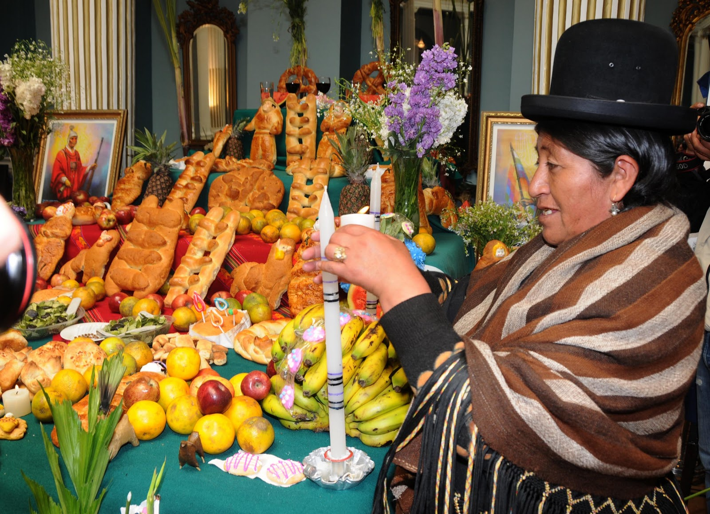

Se prepara una mesa de ofrendas con alimentos, bebidas y objetos personales de los difuntos. Se decora con flores, velas y fotos.
Se elaboran panes especiales y masitas que se colocan en los altares y se comparten con la familia y visitantes.
Se realizan rituales y oraciones para invocar a las almas de los difuntos, pidiendo su protección y bendición.
En algunas comunidades, se organizan encuentros para compartir comida, historias y música tradicional.

Contacto: jatq2018@gmail.com
Tel: +591 73061654
© 2025 Halloween vs Todos Santos
© HECHO POR JASEFT ANGEL TAPIA QUISBERT